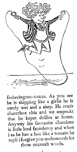

Saturday, November the 7th, 2015
back to: title, date or indexes

My more astute readers will be aware that I have, for many years, immersed myself in the world of gangsta rap. Indeed, only the other day Ice-T popped round for a cup of (non-iced) tea and we had a long and frank discussion about all sorts of gangsta rappy topics. I am of course completely au fait with the argot, so much so that even Ice himself had difficulty understanding me.
I mention this as a preamble to my news that I have been commissioned by an academic press to edit a book of essays exploring the crucial influence, in the development of gangsta rap, of fotherington-tomas. I think we all know that the St Custard's pupil who is uterly wet and a sissy is the presiding spirit of gangsta rap, the role model whose example Ice-T and all the other rappers, whose names escape me for the moment, strive to emulate.
Submissions for the book are welcome, and please bear in mind that you will be forgiven if your essay contains any uncouth words.